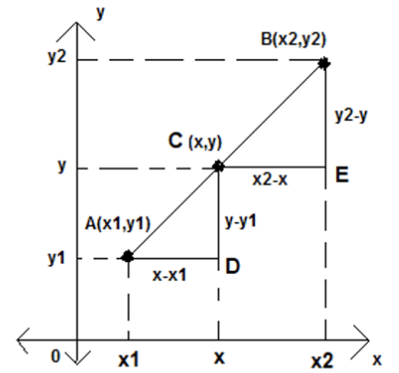
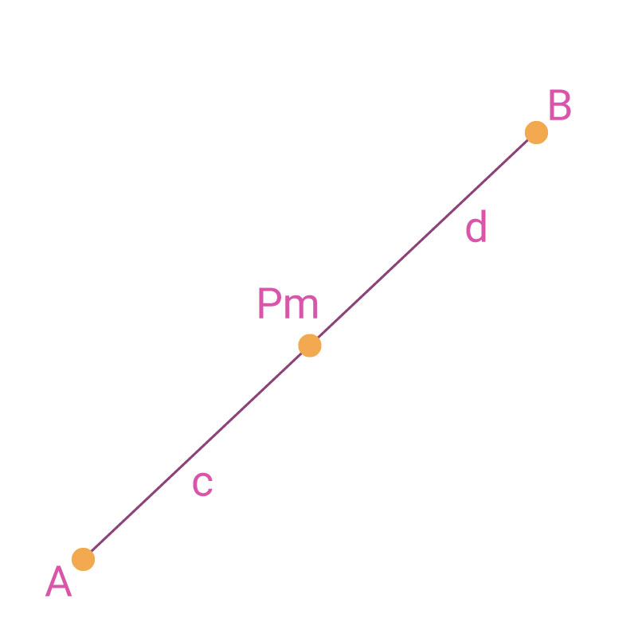

Ve el siguiente video:
Punto que divide el segmento en una razón dada
Se tiene el segmento rectilíneo determinado por $A(x1, y1)$ y $B (x2, y2)$, dividido por el punto $C(x,y)$.

Segmento dividido dado una razón.
De los triángulos semejantes $ \bigtriangleup ADC$ y $ \bigtriangleup CEB$ tenemos:
$\frac{(x-x_1)}{(x_2-x)} = \frac{(y-y_1)}{(y_2-y)} = r$
despejando tanto a $x=\frac{(x_1 - rx_2)}{(1+r)}$ como a $y = (y_1-ry_2) / (1+r)$ con $r ≠ 0, r$ $\neq$ 0 donde “x” y “y” son las coordenadas del punto que divide al segmento rectilíneo AB en una razón r
De los triángulos semejantes $ \bigtriangleup ADC$ y $ \bigtriangleup CEB$ tenemos:
$\frac{(x-x_1)}{(x_2-x)} = \frac{(y-y_1)}{(y_2-y)} = r$
despejando tanto a $x=\frac{(x_1 - rx_2)}{(1+r)}$ como a $y = \frac{(y_1-ry_2)}{(1+r)}$ con $r \neq 0$, donde “x” y “y” son las coordenadas del punto que divide al segmento rectilíneo AB en una razón r
Tenemos un caso particular para obtener el punto medio Pm (Xm ,Ym) y esta es la expresión que se utilizará.

Punto medio de un segmento de recta.
ya que
$x_m = \frac{(x_1 + x_2)}{2}$ y $y_m = \frac{(x_1 + x_2)}{2}$